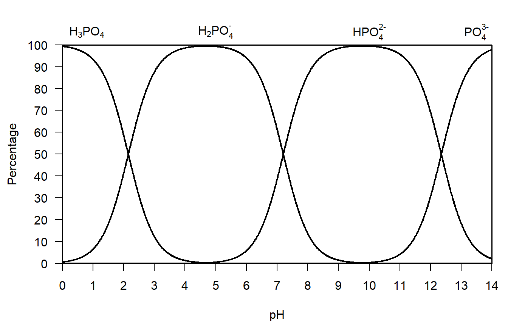
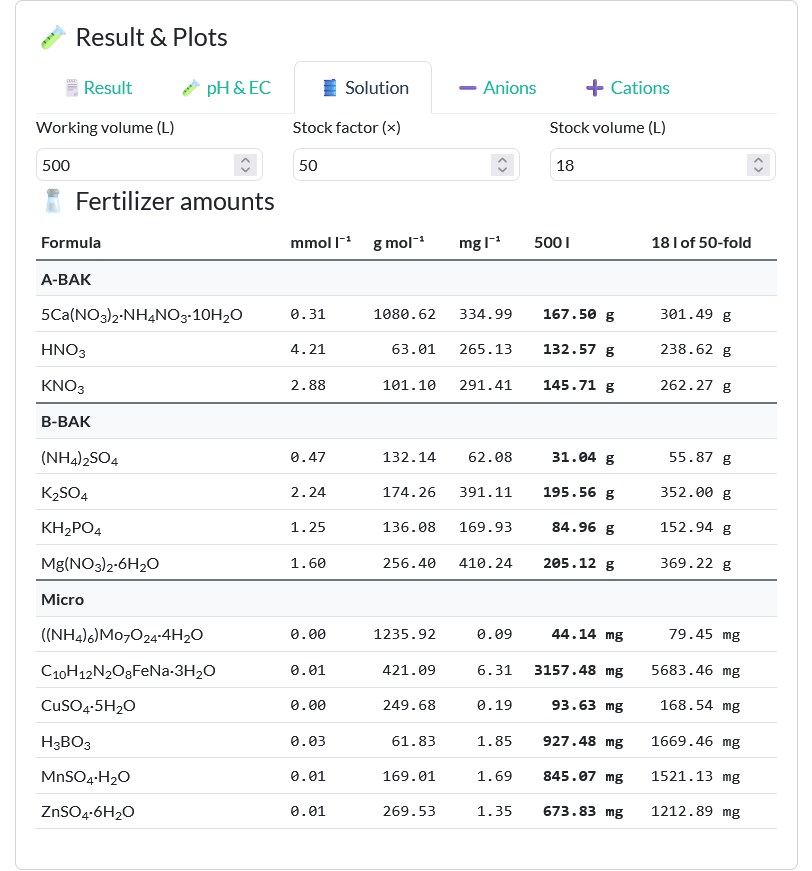

compute_molar_mass("Ca")[1] 40.078This thesis describes the development of a modular, open-source computational framework in R for the formulation and optimization of nutrient solutions in horticulture. Addressing the complexity of combining fertilizer salts to meet specific nutrient solution targets, the project formalizes the formulation process as a constrained linear optimization problem solved through non-negative least squares. The framework integrates features for stoichiometric conversion, unit transformation, ion balance visualization pH and EC prediction. A Shiny-based GUI ensures usability for researchers and practitioners alike. The tool is intended to support sustainable, data-driven horticultural practices and reduce formulation errors in both research and applied settings.
Concise summary of the research problem, objectives, methodological approach (software + chemical modeling), key results (accuracy, pH/EC plausibility, performance), and main implications. Explicitly highlights the software contribution and its relevance to nutrient solution formulation in horticulture.
Definitions of technical abbreviations and units used throughout the thesis (e.g., EC, NNLS, ppm, mmol l⁻¹, meq l⁻¹).
Power of Hydrogen (negative logarithm of the hydrogen ion activity)
Non-Negative Least Squares
Electrical Conductivity
International System of Units [Système international d’unités]
Water Use Efficiency
Base Capacity [Basen Kapazität]
Acid Capacity [Säure Kapazität]
Conventionally, inquiries in the field of hydroponics begin by juxtaposing increasing global food demand with ongoing human population growth. This framing, often invoking Malthusian concerns, is typically followed by an outline of the advantages of hydroponic systems and a comparison with problems of soil-based cultivation.
Introduces the role of nutrient solutions in hydroponic and soilless cultivation systems, and explains why accurate formulation affects plant performance, experimental validity, and sustainability.
Identifies shortcomings of current practices and tools (manual calculations, spreadsheets, black-box software), focusing on lack of transparency, reproducibility, and extensibility.
A reconstruction of nutrient calculations reported in the literature further illustrates the relevance of transparent conversion pipelines. For example, Jones et al. (2023) describe a control nutrient solution derived from defined molar concentrations of fertilizer salts (5.15 mM Ca(NO₃)₂; 8.79 mM KNO₃; 2.36 mM MgSO₄; 2.94 mM KH₂PO₄), subsequently scaled to a 10 % strength solution. Recalculating the resulting elemental concentrations reported in the paper reveals that the final values depend critically on how stoichiometric relationships, dilution factors and ion attribution are applied. In particular, deviations may arise when dilution factors are inconsistently propagated across elements, when molar masses of salts are used instead of elemental molar masses, or when contributions of shared ions are only partially accounted for. While K, P, and S match the reported control values, the largest discrepancies occur for Ca, Mg, and .Recomputing the resulting concentrations using stoichiometric attribution and elemental molar masses yields:
compute_molar_mass("Ca")[1] 40.078\[ c(\mathrm{Ca}) = 5.15\,\si{mmol.L^{-1}} \times 40.08\,\si{mg.mmol^{-1}} \times 0.1 = 20.64\,\si{mg.L^{-1}}. \]
compute_molar_mass("Mg")[1] 24.305\[ c(\mathrm{Mg}) = 2.36\,\si{mmol.L^{-1}} \times 24.31\,\si{mg.mmol^{-1}} \times 0.1 = 5.74\,\si{mg.L^{-1}}. \]
compute_molar_mass("NO3")[1] 62.004\[ c(\ce{NO3-}) = \bigl(2\times 5.15 + 8.79\bigr)\,\si{mmol.L^{-1}} \times 62.01\,\si{mg.mmol^{-1}} \times 0.1 = 118.38\,\si{mg.L^{-1}}. \]
The reported Ca value (\(82.05\ \si{mg.L^{-1}}\)) is consistent with using the molar mass of (and effectively \(5.0\ \si{mM}\) instead of \(5.15\ \si{mM}\)) rather than elemental Ca:
compute_molar_mass("Ca(NO3)2")[1] 164.086\[ c(\mathrm{Ca})_{\text{reported}} = 5.0\,\si{mmol.L^{-1}} \times 164.09\,\si{mg.mmol^{-1}} \times 0.1 = 82.05\,\si{mg.L^{-1}}. \]
The reported Mg value (\(57.37\ \si{mg.L^{-1}}\)) is consistent with the \(0.1\) scaling factor not being applied:
\[ c(\mathrm{Mg})_{\text{reported}} = 2.36\,\si{mmol.L^{-1}} \times 24.31\,\si{mg.mmol^{-1}} = 57.37\,\si{mg.L^{-1}}. \]
The reported nitrate value (\(63.87\ \si{mg.L^{-1}}\)) is consistent with counting nitrate only from (omitting the contribution):
\[ c(\ce{NO3-})_{\text{reported}} = \bigl(2\times 5.15\bigr)\,\si{mmol.L^{-1}} \times 62.01\,\si{mg.mmol^{-1}} \times 0.1 = 63.87\,\si{mg.L^{-1}}. \]
While such differences do not necessarily affect the overall conclusions of the study, they demonstrate how small ambiguities in conversion logic can lead to substantial divergence in reported nutrient concentrations. These observations underline that even well-documented experimental studies can benefit from calculation frameworks in which all assumptions—unit conversions, stoichiometric coefficients and scaling factors are explicitly encoded and reproducible. This is particularly relevant for integrated production systems, where nutrient streams are reused across modules and quantitative consistency is essential.
Provides historical context of nutrient solution formulation, common workflows used by researchers and growers, and motivates the need for a reproducible, computational framework.
Precise nutrient solution formulation is a cornerstone of modern horticultural production, particularly in hydroponic and soilless cultivation systems. This process involves selecting and combining soluble fertilizer salts to deliver specific concentrations of essential elements in desired chemical forms and ratios (Jones, 2014). While standard formulations were published since the mid-19th century (Hoagland, 1920; Hoagland & Arnon, 1950; Knop, 1860; Shive, 1915), practitioners frequently need to tailor them to local water quality, crop-specific requirements or available fertilizers, creating a complex and often error-prone challenge (Resh, 2013; Sonneveld, 2009).
In plant nutrition experiments, treatments are typically designed to vary individual nutrients while holding others constant (ceteris paribus) to investigate the effect of a single nutrient element. However, due to the interdependencies among ions and their shared presence in various fertilizer salts, such isolation is rarely achievable in practice. Researchers must therefore account for the introduction of accompanying ions, which may affect plant responses and experimental validity.
Creating accurate nutrient solutions under such constraints is time-consuming and sometimes mathematically infeasible, underscoring the need for computational tools that enable efficient, accurate, and reproducible formulation under realistic chemical and experimental conditions.
The nutrient formulation problem is inherently mathematical. Many fertilizer salts contribute multiple nutrients (e.g., Ca(NO₃)₂ supplies both calcium and nitrate), leading to an interdependent system. This can be modeled as a system of linear equations:
\(A·x = b\)
Where:
A is the nutrient matrix (each row representing a nutrient, each column a fertilizer salt),
x is the vector of unknown fertilizer quantities,
b is the vector of target nutrient concentrations.
Due to overlapping contributions and limited degrees of freedom, exact solutions may not exist. Thus, approximate solutions are needed, with the additional constraint that all fertilizer quantities must be non-negative. This motivates the use of non-negative least squares (NNLS) optimization, which minimizes the squared error between the achieved and target nutrient vectors under the constraint x ≥ 0.
Moreover, real-world use requires support for various chemical notations such as conversions between elemental and oxide forms (e.g., P ↔︎ P₂O₅, S ↔︎ SO₄²⁻) and integration with commercially available fertilizers labeled in % w/w or expressed in units such as mmol/L or mg/L. Despite the existence of some basic Windows applications and Excel tools, there is currently no open-source, modular, and transparent software solution in R that offers this level of flexibility and chemical accuracy for horticultural applications.
States the main objective of developing and evaluating a computational framework for nutrient solution formulation. Defines specific research questions related to algorithmic correctness, chemical consistency, usability, and horticultural relevance.
The main objective of this thesis is to design and implement a computational framework in R that enables the formulation, analysis and optimization of nutrient solutions specifically for controlled-environment horticulture. This framework is intended to support accurate and efficient nutrient planning, and to facilitate reproducibility and transparency in both research and practical applications.
More specifically, the thesis aims to develop tools that can construct nutrient matrices from molecular fertilizer formulas. These tools will allow for precise conversion between fertilizer compounds and their elemental forms using stoichiometric calculations. The formulation process will be modelled mathematically as a non-negative linear system and solved using Non-Negative Least Squares optimization methods (Mullen & van Stokkum, 2024).
In addition to the computational backend, the framework will include features to visualize the distribution of nutrients across different fertilizer sources, and to assess the balance between cations and anions in the resulting solution. Furthermore, it will offer the ability to approximate the electrical conductivity (EC) of a nutrient solution in advance, based on the concentrations and molar conductivity of respective ions (McCleskey et al., 2012).
The tool will also be designed with extensibility in mind, laying the groundwork for the import of commercial fertilizer compositions. In the long term, the framework will be equipped to benchmark nutrient formulations based on either experimental or simulated crop yield data.
Finally, to ensure accessibility and ease of use, the thesis will culminate in the development of a user-friendly graphical interface using the Shiny framework, enabling non-technical users to benefit from the computational functionalities (Chang et al., 2025).
Experiments in plant nutrition seek to identify causal relationships between specific nutrients and plant responses such as growth, yield, vitality, and physiological performance. Despite the apparent simplicity of manipulating nutrient concentrations, such experiments are fundamentally constrained by chemical laws that limit causal identifiability. In particular, electroneutrality and the statistical requirement of ceteris paribus jointly restrict how nutrient solutions can be manipulated and how resulting effects may be interpreted. This chapter develops a formal framework, expressed in milliequivalent (meq) notation, that derives classical experimental designs in plant nutrition from first principles and clarifies the interpretational limits of nutrient experimentation.
A nutrient solution may be represented as a vector of its ionic charge equivalents:
\[\begin{align*} \mathbf{S}_{\mathrm{meq}} &= \bigl( \mathrm{K^+},\ \mathrm{Ca^{2+}},\ \mathrm{Mg^{2+}},\ \dots \;\big|\; \mathrm{NO_3^-},\ \mathrm{Cl^-},\ \mathrm{SO_4^{2-}},\ \dots \bigr) \end{align*}\]where each component is expressed in milliequivalents per liter (meq L\(^{-1}\)). For any ion \(i\),
\[\begin{align*} \mathrm{meq}_i &= |z_i|\, c_i , \end{align*}\]with \(z_i\) denoting ionic charge and \(c_i\) the molar concentration. Expressing solution composition in meq makes ionic charge balance explicit and avoids ambiguity associated with heterovalent ions.
Not all vectors in this space are chemically admissible. All aqueous nutrient solutions must satisfy electroneutrality, which in meq notation takes the form
\[\begin{align*} \sum \mathrm{meq}_{\text{cat}} - \sum \mathrm{meq}_{\text{an}} &= 0 . \end{align*}\]The sums include all charged species present, including \(\mathrm{H^+}\) (formally \(\mathrm{H_3O^+}\)) and \(\mathrm{OH^-}\). Electroneutrality implies that no ionic component can be altered independently of ions carrying opposite charge. Any experimental manipulation therefore induces compensatory changes elsewhere in the ionic system. In this chapter, meq values are treated as analytical charge equivalents used for experimental design; activity coefficients, complexation, and ion pairing may alter speciation but do not remove the electroneutrality constraint.
In addition to charge balance, many nutritionally relevant components participate in acid–base equilibria and therefore exist as families of chemical species. For example, phosphate occurs as \(\mathrm{H_2PO_4^-}\), \(\mathrm{HPO_4^{2-}}\), and \(\mathrm{PO_4^{3-}}\), while carbonate occurs as \(\mathrm{CO_2}\), \(\mathrm{HCO_3^-}\), and \(\mathrm{CO_3^{2-}}\). Let \(c_i^{\mathrm{tot}}\) denote the total analytical concentration of component \(i\). The total charge contribution of this component to the solution can be written as
\[\begin{align*} \mathrm{meq}_i^{\mathrm{tot}} &= \sum_j |z_{ij}|\, c_{ij} , \end{align*}\]where \(c_{ij}\) is the concentration of species \(j\) belonging to component \(i\). Changes in pH redistribute charge among species with different valencies as shown for phosphate in Figure 1, thereby altering the effective ionic composition of the solution even when total analytical concentrations are held constant. Although pH can be experimentally controlled using buffers or acid–base additions, such control necessarily introduces additional ionic components and therefore does not decouple pH from nutrient composition in a causal sense.

From a causal-inference perspective, identification of an effect requires isolating variation in a target factor while holding other causally relevant factors fixed or blocked (ceteris paribus). In plant nutrition experiments, strict independent variation of a single ionic species is generally not possible, because electroneutrality and acid–base equilibria couple ionic charge, pH, ionic strength, and osmotic potential. As a result, strict ceteris paribus conditions for individual ions cannot be achieved in bulk nutrient solutions; they can only be approximated within constrained experimental frameworks. Within this framework, classical experimental designs in plant nutrition can be derived as three distinct classes of experiments, defined by the invariants they preserve in meq-space.
Here, \(\Delta\) denotes the change induced by the experimental manipulation, i.e. \(\Delta x := x_{\text{treatment}} - x_{\text{control}}\) (or, more generally, the difference between two solution states). The first class consists of qualitative, or ion-substitution, experiments. In these experiments, one ionic species is replaced by another while total cation and total anion charge equivalents are kept constant:
\[\begin{align*} \Delta \mathrm{meq}_i + \Delta \mathrm{meq}_j &= 0 . \end{align*}\]When the substituted ions have the same charge, the substitution is isovalent (e.g. \(\mathrm{K^+} \leftrightarrow \mathrm{Na^+}\) or \(\mathrm{Cl^-} \leftrightarrow \mathrm{NO_3^-}\)). When the charges differ, the substitution is heterovalent, for example replacing \(2\) meq of \(\mathrm{K^+}\) (2 mmol) with \(2\) meq of \(\mathrm{Ca^{2+}}\) (1 mmol). Qualitative substitution experiments provide the highest degree of causal specificity achievable within whole-solution manipulations at fixed charge totals, although their interpretation remains conditional on buffering and counter-ion choice.
The second class comprises quantitative, or salt addition (or removal), experiments. Here, the total amount of dissolved salt is changed, which necessarily alters both total cation and total anion charge equivalents by the same non-zero amount:
\[\begin{align*} \Delta \sum \mathrm{meq}_{\text{cat}} &= \Delta \sum \mathrm{meq}_{\text{an}} \neq 0 . \end{align*}\]Electroneutrality is preserved automatically, but ionic strength, electrical conductivity, and osmotic potential change and pH may shift depending on buffering. Because at least two ionic components vary simultaneously, plant responses in such experiments reflect composite effects of nutrient ions, counter-ions and general salinity.
The third class treats quantity as an emergent quality through solution-strength series. In this case, all charge equivalents in the solution are scaled by a constant factor \(k\):
\[\begin{align*} \mathbf{S}_{\mathrm{meq},k} &= k\, \mathbf{S}_{\mathrm{meq},1} . \end{align*}\]This transformation preserves ion ratios expressed in meq while increasing or decreasing total charge density, ionic strength and osmotic potential. Although composition remains constant at the level of charge ratios, pH and ionic speciation may shift because acid–base equilibria are nonlinear. As a result, solution strength functions as an environmental condition rather than a simple quantitative variable.
Across these three experiment types, causal specificity for individual ion identity typically decreases as the number of inseparable or uncontrolled variables increases. Qualitative substitution experiments offer the highest degree of causal specificity, whereas quantitative salt manipulations and solution-strength series progressively trade causal resolution for ecological or agronomic relevance. These experiment classes are therefore best understood as distinct projections of a chemically constrained ionic system, most transparently described in milliequivalent space.
Explains the chemical basis of nutrient delivery via fertilizer salts, including molar mass concepts, stoichiometric coefficients, and the contribution of individual ions from multi-nutrient compounds.
A classical approach to calculate a nutriens solution sonnevel universla alghorithm
Nutrient Solution Calculator is an Excel™-based tool developed by Luca Incrocci and supported by the EUPHOROS project (Pardossi et al., 2011). It was previously available for download via Wageningen University and was still accessible in 2024, but was no longer publicly available there in 2026 (Incrocci, 2007). A Spanish translation remains available online offered by the University of Almeria (Incrocci et al., 2020). The spreadsheet is designed to calculate the composition and cost of fertigation stock solutions (A+B) from three principal inputs: the ionic composition of the irrigation water, the crop nutrient recipe, including target pH, EC, and nutrient concentrations, and the technical characteristics of the fertigation system, particularly stock tank volume and dilution ratio. Furthermore, it evaluates the potential risk of salt precipitation in concentrated stock solutions. The spreadsheet is password protected.
Another Calculator is HydroBuddy, a free and open-source software application developed by Daniel Fernández Pinto for the formulation of hydroponic nutrient solutions (Fernández Pinto, 2022). The program calculates the required quantities of fertilizers to achieve specified target nutrient concentrations. It includes a database of commonly used fertilizers whose compositions can be edited or extended by the user and allows the formulation of both direct nutrient solutions and concentrated stock solutions. The software determines the combination of fertilizer salts that best matches the desired nutrient composition through the solution of a system of linear equations and also provides an empirical estimation of the EC.
No library dedicated to the calculation of Nutrient solutions developed in R is known so far.
Describes the overall workflow of the thesis: requirement analysis, software design, implementation, testing, and evaluation. Clarifies how development and validation steps are iteratively connected.
The development of the computational framework will follow a structured development and validation pipeline. For the development of the R package devtools was used (Wickham, 2025).
The first step involves designing the underlying data structures. A nutrient matrix will be established, in which the rows represent essential nutrients (such as N, P, K, Ca, etc.) and the columns represent fertilizer salts. For readability the input matrix will be transposed and converted for the calculation. Each fertilizer will be parsed based on its molecular formula into its elemental components, using a database of molar masses and established stoichiometric rules.
Building on this, an R package will be developed. This package will include core functions for parsing chemical formulas and computing molar masses, as well as for converting between different chemical representations such as oxides and elemental forms (e.g., P₂O₅ to P or SO₄ to S). It will also include tools for transforming concentration units (e.g., from mmol/L to mg/L) using accurate molar mass calculations. Also bidirectional transformations between compound and elemental quantities, incorporating stoichiometric logic, will be integrated.
The central component of the package will be an implementation of the nutrient solution formulation algorithm, using the nnls::nnls() function to solve the system of equations under non-negativity constraints and giving the difference between desired and obtained solution as absolute and relative error. The framework will allow users to assign weights to individual nutrients, enabling exploration of different formulation priorities and trade-offs.
To support usability and maintainability, the R package will include comprehensive documentation and user guides.
The framework will be validated through a series of use cases. These will include reproducing historical and crop-specific nutrient solutions comparing the computed results with values from the literature and collecting some crop and author specific nutrient solutions in a base library. Nutrient distribution of anions and cations across different solutions will be visualized e.g. by ternary plot for cations (K+, Ca2+, Mg+) and anions (NO₃⁻, SO₄²⁻, PO₄3⁻) classify systematically different nutrient combinations (Steiner, 1961). Additional validation steps may involve importing data on commercial fertilizer products and assessing the compatibility of the framework with industry formulations. Furthermore, a small user-oriented test with researchers and practitioners will be conducted to evaluate usability and practical applicability.
The package nutricalc was written in R 4.5.1 (R Core Team, 2025) using Posit RStudio 2025.09.2+418 “Cucumberleaf Sunflower” (Posit team, 2025). Following packages were used: stringr (Wickham, 2025), nnls (Mullen & van Stokkum, 2024), shiny (Chang et al., 2025), bslib (Sievert et al., 2025), Ternary (Smith & Sanselme, 2025), xml2 (Wickham et al., 2026). For the development in R devtools (Wickham et al., 2025) was used.
Code of the package is provided on GitHub under https://github.com/diolsa/nutricalc and the shiny-App is deployed under: https://nutricalc.shinyapps.io/nutricalc-app/
Code development was supported by AI-assisted LLM for debugging and optimization to ensure code quality and computational reliability with OpenAI CODEX and ChatGPT 5.2.
Describes the origin and selection of reference nutrient solution recipes, including normalization, unit harmonization, and consistency checks.
Defines the canonical nutrient set, naming conventions, chemical forms, and unit standards used consistently throughout the framework.
After the 2019 revision of the International System of Units, the base units are defined by fixed numerical values of fundamental constants (BIPM, 2019). The mole is the SI unit for the amount of a substance; its symbol is mol. The defining constant is the Avogadro constant, NA Thus:
\[\begin{equation} 1\,\mathrm{mol} = \frac{6.02214076 \times 10^{23}}{N_\mathrm{A}} \end{equation}\]
An elementary entity may be an atom, a molecule, or any other particle. In this work, the elementary entities are ions as listed in Table \(\ref{tab:element-molar-mass}\). The molar masses are taken from the CRC Handbook of Chemistry and Physics (Haynes, 2017) and rounded to three decimal places. - also a sentence why this elements (virtually part of the plant ionome)
Defines the complete nutrient vector used by the solver, including macro- and micronutrients, units, and handling of missing or optional targets. Sonneveld & Straver (1994)
Describes the stoichiometric matrix linking fertilizer compounds to nutrient ions, including how coefficients are derived from molecular formulas.
Documents fertilizer salt metadata used by the framework, including compound names, categories, acid/base flags, and handling assumptions relevant to the solver.
Describes rules and algorithms for parsing chemical formulas and calculating molar masses, including validation and error handling.
library(nutricalc)
compute_molar_mass("Ca(NO3)2·4H2O")[1] 236.146Numerically, the official SI unit for the substance concentration is mol m⁻³; however, this unit is equivalent to mmol l⁻¹. Therefore, the following relationships for conversion between mmol l⁻¹ and mg l⁻¹ were applied, following Appelo and Postma (Appelo, 2005):
Within the library, conversion between mmol l-1 and mg l-1 as elements can be accomplished with the convert_units() function. When the input is provided as a named numeric vector, the names are interpreted as nutrient identifiers (e.g., Ca, P, NO3_N) and are internally mapped to their corresponding element symbols to select the appropriate molar mass (from element_molar_mass_df) for conversion. For example, converting a complete set of recipe values from mg l⁻¹ to mmol l⁻¹:
convert_units(c(Ca = 211, P = 46), to = "mmol/L") Ca P
5.264734 1.485117 The conversion can also be applied to a single scalar concentration. In this case, the element must be specified explicitly, since a scalar input carries no nutrient name from which the element can be inferred. The element may be supplied either as a named argument or positionally in the order (x, element, to):
convert_units(x = 15, element = "N", to = "mg/L")[1] 210.105For reporting and verification a recipe can be summarized with the recipe_summary() function:
recipe_summary(c(
NO3_N = 15,
NH4_N = 1,
P = 1.5,
K = 6,
Ca = 4,
Mg = 2,
S = 2),
unit = "mmol/L") Nutrient Element mmol/L mg/L
1 NO3_N N 15.0 210.105
2 NH4_N N 1.0 14.007
3 P P 1.5 46.461
4 K K 6.0 234.588
5 Ca Ca 4.0 160.312
6 Mg Mg 2.0 48.610
7 S S 2.0 64.130When concentrations are declared in mg l⁻¹, masses are often reported in oxidized or compound forms (e.g. SO₄ or MgO). To convert between such compound-based representations and their elemental equivalents, the converte() function can be used:
\[\begin{align*} \mathrm{x_{to}} &= \mathrm{x_{from}} \times \frac{\mathrm{M_{to}}}{\mathrm{M_{from}}} \times \frac{\boldsymbol{\nu_{from,E}}}{\boldsymbol{\nu_{to,E}}} \end{align*} \noindent where \begin{align*} \mathrm{x_{from}} &\text{ is the quantity expressed as the source formula (input value),} \\ \mathrm{x_{to}} &\text{ is the equivalent quantity expressed as the target formula (output value),} \\ \mathrm{M_{from}} &\text{ is the molar mass of the source formula } [\mathrm{g\,mol^{-1}}], \\ \mathrm{M_{to}} &\text{ is the molar mass of the target formula } [\mathrm{g\,mol^{-1}}], \\ \boldsymbol{\nu_{from,E}} &\text{ is the number of atoms of the anchor element } E \text{ in the source formula } [\text{dimensionless}], \\ \boldsymbol{\nu_{to,E}} &\text{ is the number of atoms of the anchor element } E \text{ in the target formula } [\text{dimensionless}]. \end{align*}\]converte("SO4", "S")[1] 0.3337983It is also possible to specify an explicit quantity to be converted, for example when converting a given mass concentration
converte("N", "NO3", 210)[1] 929.5952If multiple elements are shared between the source and target formulas, the anchor element E must be specified to avoid ambiguity.
converte("(NH4)2HPO4", "NH4H2PO4", element = "P") # P as the anchor[1] 0.871032NNLS is a numerical optimization algorithm for solving linear least-squares problems under non-negativity constraints. It was written in 1973 in FORTRAN 77 by Lawson and Hanson at the Jet Propulsion Laboratory and published in their book Solving Least Squares Problems (Lawson & Hanson, 1974, 1995). In R, the Lawson–Hanson algorithm is implemented by the package nnls (Mullen & van Stokkum, 2024).
For nutrient solution formulation, the objective is to determine the amounts of salts that fit a specified target nutrient composition as closely as possible. Each salt contributes fixed stoichiometric amounts of ions, so the relationship between the amount of each salt and the resulting nutrient concentration in solution is linear. Because salts can only be added and not removed, their amounts are constrained to be non-negative. Nutrient solution design can therefore be formulated as a linear mixture fitting problem subject to non-negativity constraints, which can be solved using the NNLS algorithm.
Because many fertilizer salts supply multiple nutrients simultaneously exact matching of all nutrient targets is rarely possible. The optimization therefore identifies the best feasible compromise among competing nutrient constraints.
Assume that \(n\) fertilizer salts are available and \(m\) nutrients are considered.
In NutriCalc, fertilizer stoichiometry is stored in a matrix \[
S \in \mathbb{R}^{n \times m},
\] where rows correspond to salts (\(j = 1,\ldots,n\)) and columns correspond to nutrients (\(i = 1,\ldots,m\)). The entry \(S_{j i}\) gives the amount of nutrient \(i\) supplied by one unit of salt \(j\) (mmol nutrient per mmol salt).
Let
For fitting, the solver uses the transposed stoichiometry matrix \[ A = S^\top \in \mathbb{R}^{m \times n}, \] so that rows correspond to nutrients and columns correspond to salts. The system therefore consists of \(m\) nutrient equations and \(n\) non-negative decision variables. Predicted (achieved) nutrient concentrations are \[ \hat b = A x . \]
Thus, each row of \(A\) represents the linear contribution of all salts to one nutrient, and each column represents the nutrient composition of one salt. The optimization therefore selects salt amounts so that the combined nutrient profile best approximates the desired composition.
NutriCalc does not solve the unweighted least-squares problem \(\min_{x \ge 0}\lVert Ax - b\rVert_2\). Instead, residuals are rescaled relative to target magnitude and weighted according to user-defined nutrient importance.
Conceptually, the solver minimizes the total weighted squared deviation between achieved and target nutrient concentrations. For nutrients with nonzero targets, deviations are measured relative to the target (i.e. proportional error). For nutrients with zero targets, deviations are measured in absolute concentration units.
This relative scaling is necessary because nutrient concentrations often differ by several orders of magnitude (for example, macronutrients versus micronutrients). Without scaling, nutrients present at large absolute concentrations would dominate the optimization and prevent meaningful fitting of low-concentration nutrients.
Scaling and importance weighting operate on residuals rather than on concentrations themselves. Optimization decisions therefore depend on deviations from targets rather than absolute concentration levels.
In practical nutrient formulation, not all targets must be matched with the same precision. Some nutrients are critical for plant performance and must be maintained close to their target concentration, whereas others can vary within a broader range without adverse effects. The optimization therefore allows nutrient-specific importance levels that determine how strongly deviations from individual targets are penalized.
User-defined importance values \(I_i\) express the desired strictness of matching each nutrient. Higher importance means that deviations from the target are penalized more strongly, forcing the solver to prioritize matching that nutrient even if this leads to larger deviations in less important nutrients.
Importance values are restricted to the interval \([-2,2]\) and converted into positive numerical weights using an exponential mapping: \[ \tilde I_i = \min\!\bigl(2,\max(-2,I_i)\bigr), \] \[ w_i = 0.1 \cdot 1000^{\tilde I_i}. \]
Each unit increase in importance multiplies the penalty on deviations by a factor of 1000. This creates clear separation between importance levels and ensures that highly important nutrients strongly influence the optimization outcome. This mapping produces weights spanning approximately \(10^{-7}\) to \(10^{5}\).
The weights are incorporated into the least-squares objective using the diagonal matrix \[ W = \mathrm{diag}\!\left(\sqrt{w_1},\ldots,\sqrt{w_m}\right), \] which scales the residuals before minimization. The optimization therefore minimizes a weighted sum of squared deviations, where each nutrient contributes proportionally to its assigned importance.
Nutrient targets differ substantially in magnitude, with macronutrients typically present at concentrations several orders of magnitude larger than micronutrients. If deviations were measured only in absolute units (mmol L\(^{-1}\)), nutrients with large target concentrations would dominate the optimization, and small but biologically important deviations in low-concentration nutrients would have little influence on the solution.
To avoid this imbalance, residuals are scaled relative to target magnitude. For each nutrient \(i\), define a scaling factor \[ s_i = \begin{cases} b_i, & b_i \ne 0,\\ 1, & b_i = 0. \end{cases} \]
For nutrients with nonzero targets, deviations are therefore measured relative to the target value. For nutrients with zero targets, deviations are measured in absolute concentration units.
To apply this scaling, each nutrient equation is divided by its corresponding factor \(s_i\). In matrix form, the target-scaled design matrix is \[ A_{\mathrm{sub}} = \operatorname{diag}(1/s)\, A, \] and the scaled target vector is \(b/s\), where division is performed elementwise.
The NNLS problem is then \[ \min_{x \ge 0} \left\| W \left( A_{\mathrm{sub}} x - b/s \right) \right\|_2^2 . \]
This is equivalent to minimizing a weighted sum of squared scaled residuals. For nutrients with nonzero targets, the optimization minimizes weighted relative deviations; for nutrients with zero targets, it minimizes weighted absolute deviations. The scaling ensures that all nutrients contribute comparably to the optimization regardless of their concentration range, while importance weights control how strictly individual targets are enforced.
Operationally, the solver predicts nutrient concentrations from candidate salt amounts, computes deviations from the targets, rescales and weights these deviations according to target magnitude and nutrient importance and determines the non-negative salt combination that minimizes the resulting weighted least-squares objective.
The NNLS solver returns the optimal non-negative salt amounts \(x\). Because the optimization is performed on scaled and weighted equations, achieved nutrient concentrations are recomputed using the original, unscaled stoichiometry: \[ \hat b = A x . \]
The vector \(x\) therefore represents the physically meaningful fertilizer composition and is interpreted directly as mmol L\(^{-1}\) of each salt to add to the nutrient solution. These values can therefore be used directly to prepare the nutrient solution.
NutriCalcAfter computing achieved nutrient concentrations, deviations from the target composition are quantified using several complementary error measures. These metrics describe both absolute and relative discrepancies between predicted and desired nutrient levels.
The absolute error for nutrient \(i\) is
\[ e_i = \hat b_i - b_i , \]
expressed in mmol L\(^{-1}\). This measures the direct concentration difference between achieved and target values.
Percent error expresses the deviation relative to the target concentration:
\[ p_i = 100 \cdot \frac{e_i}{b_i}. \]
Percent error is computed elementwise. Non-finite values (e.g. division by zero) are recorded as missing. If \(b_i = 0\) and \(|\hat b_i| < 10^{-9}\), the percent error is set to \(0\).
To summarize overall deviation across all nutrients, sum of squared error is computed as
\[ \mathrm{SSE} = \sum_{i=1}^{m} e_i^2 . \]
This metric reflects the total magnitude of absolute concentration differences.
Relative squared error evaluates deviations relative to target magnitude. Relative residuals are defined as
\[ r_i = \frac{e_i}{b_i}, \]
and non-finite values are omitted. The aggregate measure is reported as the sum of squared relative errors
\[ \mathrm{SSRE} = \sum_{i=1}^{m} r_i^2 . \]
This metric summarizes proportional deviations across nutrients and provides a scale-independent measure of solution accuracy. Nutrients with zero target concentration where excluded from relative error metrics.
In addition to the standard optimization, NutriCalc provides an optional two-stage solver that incorporates acid–base reagents. These compounds are included in the global stoichiometry matrix and distinguished from neutral fertilizer salts using the classification salt_info$is_acid_base. The purpose of this separation is to ensure that nutrient targets are satisfied using neutral salts first and whenever possible, while acids and bases are used only to correct remaining deficits that neutral salts cannot resolve. This prevents acid–base reagents from acting as unconstrained degrees of freedom in the primary optimization and yields chemically more interpretable fertilizer compositions.
The two-stage procedure is activated only when the acid/base option is enabled. When this option is disabled, acid/base compounds are excluded from the selected compound set and nutrient optimization is performed using neutral salts only. Boric acid belongs to the neutral group in this classification, as it is treated as a micronutrient source rather than a pH-active reagent.
In the first stage, NNLS optimization is performed using only compounds classified as neutral salts. This stage uses the same weighted and target-scaled objective as the standard solver and produces achieved nutrient concentrations
\[ \hat b^{(1)}. \]
Residual nutrient deviations are then computed as
\[ r = b - \hat b^{(1)}. \]
Residual entries are filtered before any second-stage correction. Deviations within the relative tolerance are treated as negligible and set to zero. Residuals are also set to zero for nutrients that cannot be supplied by any acid or base (non-fixable nutrients). Negative residuals (oversupply) are set to zero so that only undersupplied nutrients remain eligible for correction.
If the two-stage mode is enabled and at least one fixable nutrient exceeds the tolerance criterion defined by
\[ r_i > \max(\texttt{tol\_abs}, \texttt{tol\_rel}\, b_i), \]
a second NNLS optimization is performed using only acid/base compounds. The target for this stage is the filtered residual vector from stage 1. Scaling and importance weighting are applied using the same rules as in the standard solver, but computed from the residual target rather than the original nutrient targets. Stage 2 therefore supplies only remaining nutrient deficits that neutral salts could not provide.
Compound amounts from stage 1 and stage 2 are then inserted into their original compound indices to form the complete fertilizer vector (x). Final nutrient concentrations are recomputed from the full unscaled stoichiometry matrix,
\[ \hat b = A x, \]
and all error metrics are evaluated from these final concentrations.
Accordingly, the two-stage solver acts as a conditional refinement: neutral salts determine the primary nutrient composition, and acid–base reagents are introduced only when residual deficits exceeding the tolerance criterion remain after the neutral fit. Lowering the importance of a specific nutrient reduces the penalty for deviating from its target during stage 1, allowing a residual deficit to remain primarily in that nutrient while the remaining nutrients are matched more closely. Because stage-2 optimization operates only on residual undersupply, this deficit can then be supplied during the second stage by the corresponding acid–base compounds.
Nutrient formulation was implemented using a target-based optimization workflow in NutriCalc. Users specify desired final nutrient concentrations as a nutrient target vector. The solver then computes the fertilizer salt additions needed to match this target. This approach is exact only when the initial water matrix is essentially deionized or demineralized water. In practical cultivation systems, however, source water already contains dissolved ions that contribute to the final solution and must therefore be accounted for before fertilizer optimization.
To represent this baseline contribution, water chemistry is modeled as a water vector containing pre-existing ion concentrations. The formulation step uses an adjusted target vector obtained by subtracting the baseline water vector from the desired nutrient target vector. For each nutrient ion \(i\), the solver input is defined as:
\[ T_i^{adj} = \max\!\left(T_i^{target} - W_i,\; 0\right) \]
where \(T_i^{target}\) is the desired final concentration and \(W_i\) is the concentration already present in the source water. Negative adjusted concentrations are not physically meaningful because fertilizer salts can only be added. Therefore, adjusted targets are bounded below by zero. The lower bound at zero reflects the additive-only fertilizer model used in the optimizer; excess baseline ions cannot be removed within this step. The resulting adjusted vector is then passed to the salt optimizer.
In addition to ionic concentrations, two buffering descriptors are important for water characterization: acid capacity (Säurekapazität, KS 4.3) and base capacity (Basenkapazität, KB 8.2). These are not treated as primary fertilizer targets, but are retained as water properties because they influence downstream interpretation of pH behavior.
Because users may operate with blended feed waters, NutriCalc supports mixing of multiple source waters prior to target subtraction. Each source is represented as a separate composition vector and the composite baseline is computed by mass balance. For two source waters with compositions \(W_1\) and \(W_2\) and volumes \(V_1\) and \(V_2\), the mixed baseline composition is:
\[ W^{mix} = \frac{V_1 W_1 + V_2 W_2}{V_1 + V_2}. \]
This expression is evaluated component-wise for all dissolved constituents of the water vector. The adjusted nutrient target is subsequently computed as:
\[ T^{adj} = \max\!\left(T^{target} - W^{mix},\; 0\right). \]
This enables realistic handling of scenarios such as blending municipal water with deionized water, rainwater, or other process waters before nutrient dosing.
Water quality inputs were derived from publicly available authority datasets where possible. For Berlin, NutriCalc retrieves supplier data and maps it to the internal water-vector representation. In practice, users can query location-specific baseline water data by postal code and optionally modify values to reflect local measurements or temporal variability.
Overall, this method ensures that fertilizer optimization is performed against the true chemical starting point rather than an idealized zero-background assumption. By explicitly modeling baseline composition, optional source-water mixing and buffering-related capacities, the resulting formulations are more representative of real cultivation solutions and suitable for subsequent pH and EC evaluation.
Solution pH is calculated using ph_from_achieved() based on the achieved nutrient composition returned by the solver (mmol L\(^{-1}\)). The calculation is performed as a charge-balance problem in which pH is treated as an unknown variable. The hydrogen ion concentration is determined such that the aqueous solution satisfies electroneutrality, expressed in milliequivalents per litre (meq L\(^{-1}\)), such that total positive and negative charge are equal (Appelo, 2005).
The calculation is formulated as a root-finding problem in which the charge-balance residual is expressed as a function of pH. The root variable is defined as
\[ \mathrm{pH}_c = -\log_{10}([\mathrm{H}^+]). \]
For each trial value of \(\mathrm{pH}_c\), equilibrium speciation is computed and the resulting charge imbalance is evaluated. The solution pH corresponds to the value of \(\mathrm{pH}_c\) for which the charge residual equals zero within numerical tolerance.
Strong ions (e.g., \(\mathrm{K}^+\), \(\mathrm{Na}^+\), \(\mathrm{Ca}^{2+}\), \(\mathrm{Mg}^{2+}\), \(\mathrm{NO}_3^-\), \(\mathrm{Cl}^-\)) contribute with fixed concentrations from the achieved nutrient composition, whereas variable ions (e.g., \(\mathrm{H}^+\), \(\mathrm{OH}^-\), \(\mathrm{NH}_4^+\)) are determined from equilibrium speciation. Weak acid–base systems (e.g., sulfate, phosphate, carbonate, borate, silicate) are included in the speciation model and contribute to the charge balance according to their equilibrium distributions.
Carbonate speciation is parameterized either from a carbonate-system input treated as total inorganic carbon when provided (e.g., KS4_3, interpreted approximately as \(\mathrm{HCO}_3^-\)), or from fixed dissolved \(\mathrm{CO}_2(\mathrm{aq})\) when provided (e.g., KB8_2, interpreted approximately as \(\mathrm{CO}_2\)). Optional chelating ligands (e.g., for Fe) are included as fixed-charge anions when ligand totals are present (default net charges: EDTA, EDDHA, HBED \(z=-4\) and DTPA \(z=-5\)).
Acid–base equilibria are evaluated using thermodynamic dissociation constants at 25 °C (Haynes, 2017). The speciation model includes the following equilibrium systems:
| System | Equilibrium species |
|---|---|
| Water | \(\mathrm{H}^+\), \(\mathrm{OH}^-\) |
| Ammonia | \(\mathrm{NH}_4^+\), \(\mathrm{NH}_3\) |
| Sulfate | \(\mathrm{HSO}_4^-\), \(\mathrm{SO}_4^{2-}\) |
| Phosphate | \(\mathrm{H}_3\mathrm{PO}_4\), \(\mathrm{H}_2\mathrm{PO}_4^-\), \(\mathrm{HPO}_4^{2-}\), \(\mathrm{PO}_4^{3-}\) |
| Carbonate | \(\mathrm{CO}_2(\mathrm{aq})\), \(\mathrm{HCO}_3^-\), \(\mathrm{CO}_3^{2-}\) |
| Borate | \(\mathrm{B(OH)}_3\), \(\mathrm{B(OH)}_4^-\) |
| Silicate | \(\mathrm{H}_4\mathrm{SiO}_4\), \(\mathrm{H}_3\mathrm{SiO}_4^-\) |
Non-ideal solution behavior is represented using Davies activity coefficients at 25 °C, using the Debye–Hückel parameter for water (\(A = 0.5085\)). Ionic strength is computed as
\[ I = \tfrac{1}{2} \sum c_i z_i^2. \]
For each trial \(\mathrm{pH}_c\), ionic strength and activity coefficients are determined iteratively because they depend on the speciation they influence. Ionic strength is computed from species concentrations, activity coefficients are updated from ionic strength and speciation is recalculated. This fixed-point iteration is repeated until successive estimates converge. The resulting activity coefficients are then applied to all equilibrium expressions.
After convergence of the inner speciation loop, the charge residual is evaluated as total positive equivalents minus total negative equivalents. Positive charge includes fixed cations and variable \(\mathrm{H}^+\) and \(\mathrm{NH}_4^+\). Negative charge includes fixed anions, \(\mathrm{OH}^-\), and the equivalent contributions of sulfate, phosphate, carbonate, borate, and silicate species, together with optional fixed chelate charge.
The bisection search is initialized over a bounded pH interval (default 3–9), reflecting the typical range of horticultural nutrient solutions and improving numerical stability. If the charge-balance function is not bracketed within this interval, the search range is expanded automatically.
The reported pH is activity-based,
\[ \mathrm{pH} = -\log_{10}\!\bigl(\gamma_H [\mathrm{H}^+]\bigr), \]
and therefore may differ slightly from \(\mathrm{pH}_c\). All calculations assume 25 °C and exclude precipitation reactions and explicit metal–ligand complexation beyond optional fixed-charge chelate terms.
Electrical conductivity (EC) quantifies the ability of an aqueous solution to transport electrical charge and is therefore determined by the concentration and mobility of dissolved ions. Several approaches exist for estimating EC from chemical composition, ranging from simple empirical relationships to ion-specific physicochemical models.
In practical greenhouse fertilization, EC is often estimated from the total ionic charge concentration expressed in milliequivalents per liter (meq L\(^{-1}\)). A widely used rule of thumb for greenhouse nutrient solutions is (van der Lugt et al., 2020):
\[ \mathrm{EC}\;(\mathrm{mS\,cm^{-1}}) = \frac{ \sum \mathrm{meq\;cations} + \sum \mathrm{meq\;anions} }{20}. \]
Because aqueous solutions satisfy electroneutrality,
\[ \sum \mathrm{meq\;cations} \approx \sum \mathrm{meq\;anions}, \]
this relationship can also be interpreted as a proportionality between EC and total ionic charge concentration. A closely related approximation for dilute aqueous solutions is described by Appelo (2005), where conductivity in µS cm\(^{-1}\) is approximately proportional to total milliequivalents per liter (typically valid below about 1.5 mS cm\(^{-1}\)):
\[ \sum \mathrm{meq\;ions} \;\approx\; \frac{\mathrm{EC}\;(\mu\mathrm{S\,cm^{-1}})}{100}. \]
More refined empirical relationships have been proposed for greenhouse nutrient solutions with relatively constrained ionic composition. Based on experimental calibration, Sonneveld & Straver (1994) proposed the following regression relating EC to total cation concentration:
\[ \mathrm{EC} = 0.095 \cdot \sum \mathrm{meq\;cations} + 0.19, \]
where EC is expressed in mS cm\(^{-1}\).
Although such empirical formulations may improve predictive accuracy within their calibration range, they do not explicitly account for differences in ionic mobility among individual species. Because the ionic species present in solution are known in NutriCalc, EC can be estimated mechanistically from their concentration, charge and mobility. The limiting molar ionic conductivity can be related to the diffusion coefficient through the Nernst–Einstein relation (Kalka, 2020). In NutriCalc, this relation is extended by a mobility correction term accounting for non-ideal solution behavior. This method is used in hydrochemical programs such as PHREEQC (up to version 3.8) and AQION 8.7.15 (Appelo, 2010; Kalka, 2020).
\[\begin{align} \label{eq:ec} \mathrm{EC} = \left(\frac{F^2}{R T}\right) \sum_{i} D_i z_i^{2}\, (\gamma_i)^{\alpha_i}\, c_i. \tag{6} \end{align}\]
where
\[\begin{align*} F &\text{ is Faraday’s constant } [9.6485\times 10^{4}\ \mathrm{C\,mol^{-1}}],\\ R &\text{ is the gas constant } [8.31446\ \mathrm{J\,mol^{-1}\,K^{-1}}],\\ T &\text{ is absolute temperature } [T = t_{\mathrm{C}} + 273.15\ \mathrm{K}],\\ D_i &\text{ is the diffusion coefficient of ion } i\ [\mathrm{m^2\,s^{-1}}],\\ z_i &\text{ is the ionic charge number},\\ \gamma_i &\text{ is the activity coefficient of ion } i,\\ \alpha_i &\text{ is an empirical mobility scaling exponent},\\ c_i &\text{ is the molar concentration of ion } i. \end{align*}\]
Concentrations used in the conductivity summation are expressed in mol m\(^{-3}\). Concentrations obtained in mmol L\(^{-1}\) are numerically identical to mol m\(^{-3}\) and are therefore used directly without conversion. For conductivity, concentrations are expressed in mol m\(^{-3}\) whereas ionic strength for activity modeling is calculated from concentrations expressed in mol L\(^{-1}\). Diffusion coefficients in the internal data tables are stored in units of \(10^{-5}\,\mathrm{cm^2\,s^{-1}}\) at 25 °C and converted to SI units prior to calculation:
\[ 1\times10^{-5}\,\mathrm{cm^2\,s^{-1}} = 1\times10^{-9}\,\mathrm{m^2\,s^{-1}}. \]
The activity of a dissolved species depends not only on its concentration but also on the ionic strength of the solution (Amelung et al., 2018). Ionic strength \((I)\) is calculated for activity modeling from molar concentrations expressed in mol L\(^{-1}\):
\[ I = \frac{1}{2}\sum_i z_i^2 c_i. \]
Because the classical Nernst–Einstein relation applies strictly at infinite dilution, a mobility scaling factor is introduced to account empirically for inter-ionic interactions at finite ionic strength as described by Appelo (2010). The scaling exponent is defined as
\[ \alpha_i = \begin{cases} \frac{0.6}{\sqrt{|z_i|}}, & I \le 0.36|z_i| \\ \frac{\sqrt{I}}{|z_i|}, & I > 0.36|z_i| \end{cases} \]
providing an ionic-strength-dependent attenuation of individual ionic contributions.
Activity coefficients \((\gamma_i)\) are obtained using the selected activity model implemented in NutriCalc. Two models are currently implemented: the limiting Debye–Hückel model and the Davies model. In the limiting Debye–Hückel model, the activity coefficient is given by
\[ -\log_{10}(\gamma_i) = A z_i^2 \sqrt{I}, \]
whereas in the Davies model it is given by
\[ -\log_{10}(\gamma_i) = A z_i^2 \left(\frac{\sqrt{I}}{1+\sqrt{I}} - 0.3I\right), \]
where \(A = 0.5085\) at 25 °C, \(z_i\) is the ionic charge number and \(I\) is the ionic strength in mol L\(^{-1}\).
The limiting Debye–Hückel formula is typically applied at ionic strengths up to 0.1 mol L\(^{-1}\) whereas the Davies formula is generally considered applicable up to about 0.5 mol L\(^{-1}\). Currently the Davies activity correction is used as the default in the NutriCalc Shiny app.
The calculation is applied to the fully speciated aqueous ion composition obtained after nutrient formulation and equilibrium pH calculation. All dissolved charged species, including hydrogen and hydroxide ions, contribute to the conductivity sum according to their diffusion properties and concentrations.
Diffusion coefficients of ionic species at 25 °C were retrieved from Haynes (2017). The approach assumes fully dissociated strong electrolytes and does not account for neutral species or metal–ligand complexes. Consequently, the model provides a physically based estimate of conductivity that resolves species-specific contributions but may deviate from measured EC where complexation, ion pairing or strong ion association is significant.
To install and run the application locally, users can use the package remotes to install package nutricalc from GitHub the following code:
install.packages("remotes")
remotes::install_github("diolsa/nutricalc")
library(nutricalc)
run_app()Alternatively it is possible to run the deployed shiny application online without local installation at https://nutricalc.shinyapps.io/nutricalc-app/
+Documents accepted input formats, unit handling, and priority settings provided by the user.
On the target tab it is possible to input water values which will be subtracted from the target values. In the water tab users can fetch water data from berlin with the postal zip code (PLZ). This fetches the men data from bwb.de analyse na plz BWB (2026)
Describes fertilizer library management and the use of predefined or custom recipes.
Summarizes generated outputs, including tables, ternary plots, nutrient distributions and stock solution calculations.
Three case studies were selected to validate the performance of the application by covering a wide range of different use cases. For this three kind of users with different aims where imagined:
1 Plant scientist that performs an experiment and needs a classical solution Hoagland solution?? in differtn sreghts, but is lacking some salts. Restricted Salts (classical salts missing?). is using deionized water.
2 Horticultural Technician that needs a nutrient solution for a common crop. Technical salts. Cucumber. Use berlin dahlem water. I using deionized water with classical but wants to switch to local water to save costs. Second solver allowed acids/base (using nitric acid)
3 Horticultural scientist that want to find a recipe for a novel crop. All salts. Crop: Halphyte Salicornia europea? is using WUE and fishwater mixed with deionized ?
-Defines criteria for selecting representative crops, nutrient solutions, and formulation scenarios.
Defines absolute and relative error measures, nutrient weighting schemes, and acceptance thresholds.
Describes benchmarking procedures used to assess runtime behavior and scalability with increasing problem size.
The following result section is divided in two parts. The first part a general comparision
To evaluate solver performance, a set of published crop specific nutrient targets from Sonneveld & Straver (1994) were used as model input. These recipes specify target nutrient concentrations for various crops in mmol L⁻¹. The solver was only applied allowing salts to each recipe (no acids or bases) to compute the optimal fertilizer composition and achieved nutrient concentrations and were compared to the specified targets. The following sections summarize the results of this evaluation, including achieved nutrient profiles, error metrics, pH and EC. In addition, because Sonneveld et al. (1999) and Sonneveld (2009) used one reference formulation to demonstrate a universal nutrient solution algorithm, the NutriCalc solution for this formulation was compared in detail with the published results.
All reported recipes (list of recipes is found in Table 1 ) were solved and achieved results are summarized in Table 2. Squared absolute and relative errors are reported for each recipe, quantifying the deviation between achieved and target nutrient concentrations across all nutrients. All achieved results matched the target nutrient profiles with SSE and SSRE values close to zero. Recipes including Si as a target nutrient exhibited comparatively higher relative error values. In formulations using Fe, achieved Na concentrations were non-zero although Na was not specified in the literature target vectors and Na contributed to the absolute error. When Na was added to the target vector at the achieved concentration (Na target set equal to Fe), the corresponding SSE values decreased to zero. For recipes containing Si, applying the second solver approach with reduced weighting for NO₃–N resulted in solutions with an SSRE of 0.
test row
lala
Both γ activity correction models (Davies and Debye–Hückel) were evaluated for pH prediction against the phosphate buffer system (50 mL of 0.1 mol L⁻¹ KH₂PO₄ + x mL of 0.1 mol L⁻¹ NaOH), which spans pH 5.8–8.0 (Bower & Bates, 1955; Haynes, 2017). In Figure 2, predicted pH values are plotted against the reference pH for increasing NaOH additions at 25 °C. The Davies model closely matched the reference values (R2 = 0.998), whereas the Debye–Hückel model showed weaker agreement (R2 = 0.880).
Diskussion: Consequently, γ Davies was selected as the default activity correction for pH prediction in NutriCalc.
To evaluate EC calculation performance, models were compared against reference calibration EC values for KCl solutions at 25 °C. Electrical conductivity values for 0.01 and 0.1 mol L⁻¹ KCl were taken from @Haynes.2017, which reports values based on primary conductivity standards originally published by @Pratt.2001. In @tbl-kcl-ec-comparison , reference values are compared with NutriCalc EC predictions using both γ activity-correction models (Davies and Debye–Hückel). For comparison, the empirical approach by @Sonneveld.1999 and geochemical computations with PHREEQC (@Parkhurst.2013) are also shown. PHREEQC and NutriCalc with γ Davies were very close to the values reported by @Haynes.2017 at both concentrations. NutriCalc with γ Debye–Hückel slightly underestimated EC, while the underestimation was larger for the Sonneveld empirical approach.
The nutrient solution algorithm described by Sonneveld (2009) uses the cucumber recipe with reuse of drainage water published in Sonneveld & Straver (1994) as a demonstration of a universal nutrient-solution formulation method proposed in Sonneveld et al. (1999). The target macronutrient concentrations for this demonstration are 11.75 mmol L⁻¹ NO₃–N, 1.00 mmol L⁻¹ NH₄–N, 1.25 mmol L⁻¹ P, 6.50 mmol L⁻¹ K, 2.75 mmol L⁻¹ Ca, 1.00 mmol L⁻¹ Mg, and 1.00 mmol L⁻¹ S. Micronutrients are not included because Sonneveld (2009) reports fertilizer additions only for macronutrients in this example. For a direct comparison, NutriCalc was constrained to the same set of salts reported by Sonneveld (2009). The published Sonneveld formulation includes nitric acid. NutriCalc matched the targets exactly (SSE = 0; SSRE = 0) using the one-stage solver without requiring acid addition. The same error metrics (SSE and SSRE) were computed for both the published Sonneveld formulation and the NutriCalc solution and are shown in Table 6. For the composition of nutrient salts used for the two formulations, see Table 7.
| Nutrient | Target | Achieved | SE | SRE | Achieved | SE | SRE |
|---|---|---|---|---|---|---|---|
| NO₃–N | 11.75 | 14.96 | 10.3041 | 0.0746 | 11.75 | 0.0000 | 0.0000 |
| NH₄–N | 1.00 | 1.25 | 0.0625 | 0.0625 | 1.00 | 0.0000 | 0.0000 |
| P | 1.25 | 1.50 | 0.0625 | 0.0400 | 1.25 | 0.0000 | 0.0000 |
| K | 6.50 | 8.88 | 5.6644 | 0.1341 | 6.50 | 0.0000 | 0.0000 |
| Ca | 2.75 | 2.47 | 0.0784 | 0.0104 | 2.75 | 0.0000 | 0.0000 |
| Mg | 1.00 | 1.07 | 0.0049 | 0.0049 | 1.00 | 0.0000 | 0.0000 |
| S | 1.00 | 0.87 | 0.0169 | 0.0169 | 1.00 | 0.0000 | 0.0000 |
| SSE = 16.1937 | SSRE = 0.3434 | SSE = 0.0000 | SSRE = 0.0000 |
| Name | Formula | Sonneveld | NutriCalc |
|---|---|---|---|
| Calcium nitrate–ammonium nitrate decahydrate (5:1) | 5 Ca(NO₃)₂·NH₄NO₃·10 H₂O | 0.49 | 0.55 |
| Ammonium nitrate | NH₄NO₃ | 0.76 | 0.45 |
| Monopotassium phosphate | KH₂PO₄ | 1.50 | 1.25 |
| Magnesium nitrate hexahydrate | Mg(NO₃)₂·6 H₂O | 1.07 | 1.00 |
| Potassium sulfate | K₂SO₄ | 0.87 | 1.00 |
| Nitric acid | HNO₃ | 1.00 | – |
| Potassium nitrate | KNO₃ | 5.64 | 3.25 |
For a nutrient solution formulated for tomatoes cultivated in rockwool (Sonneveld & Straver, 1994) and prepared with tap water from postal code 14195 (BWB, 2026), the two-stage solver with nitric acid addition was used. The calculated fertilizer salts are shown in Figure 3, including the amounts required for the preparation of 500 L nutrient solution and the corresponding amounts for 18 L of a 50-fold concentrated stock solution separated into A-BAK, B-BAK and micronutrients.

The tomato recipe specifies a target composition without Na, Cl, or Si. In the calculated solution, these elements were present due to their contribution from the tap water. Although the target composition was matched with an SSRE of 0, absolute deviations remained for Na, Cl, and Si, resulting in an SSE of 7.69. The absolute errors were 2.03 mmol L⁻¹ for Na, 1.86 mmol L⁻¹ for Cl, and 0.30 mmol L⁻¹ for Si. Of the Na concentration, 0.015 mmol L⁻¹ originated from Fe-EDTA.
The tap water from postal code 14195 had a calculated pH of 7.44 and an EC of 0.86 mS cm⁻¹. Besides the ions considered in the target nutrient composition, it supplied 2.02 mmol L⁻¹ Na⁺ and 1.86 mmol L⁻¹ Cl⁻, contributing 0.09 and 0.13 mS cm⁻¹, respectively, to the total EC. The electroneutral 0.3 mmol L⁻¹ Si present in the tap water did not contribute to the overall EC.
The calculated final nutrient solution had a pH of 5.82. Ionic strength amounted to 34.84 mmol L⁻¹, while the total concentration of charge equivalents was 24.61 meq L⁻¹. The calculated EC was 2.81 mS cm⁻¹, and the osmotic potential was −101.02 kPa. In the final solution, the largest ionic contribution to EC was from NO₃⁻ at 0.89 mS cm⁻¹, followed by K⁺ at 0.58 mS cm⁻¹ and SO₄²⁻ at 0.45 mS cm⁻¹
The NNLS algorithm used in NutriCalc is robust for solving nutrient formulation problems, as it effectively handles the constraints of non-negativity and can accommodate a wide range of target nutrient profiles.
It is important to understand the implications that the optimization problem can be under- or overdeterminated. An overdeterminated problem is a perfectly balanced target in the meq space where the solver can find a solution that matches the target exactly only using salts. Overall if the SSR and SSRE are both zero, the solver has found a solution that matches the target perfectly in abolute and relative terms for all targets. But this does not mean that this is the only solution or that the solution is unique. In fact, there may be multiple solutions that achieve the same target profile, especially if the target is overdetermined. The solver will return one of these solutions, but there may be others that also match the target perfectly.
In contrast, an underdetermined problem is one where the target profile is not electroneutral and thus not perfectly balanced in the meq space. Therefore the solver cannot find a solution that matches the target exactly, because every salt is inert and electroneutral. In this case, the solver will try to find a solution that minimizes the deviation from the target, but it will not be able to match all nutrients perfectly.
unweighted vs weighted
As weighting is optional, the solver can also be used in an unweighted manner, where, due to the normalization, all nutrients are treated equally in the optimization process. If a target is overdetermined, the solver will try to match every nutrient in relative terms, matching all targets as closely as possible and minimizing the SSRE for non-zero targets and the SSE for zero targets. The ability to weight certain nutrients allows prioritization of some nutrients over others, which can be useful when some nutrients are more critical for plant growth or when certain deviations are more tolerable. In mathematical terms, this corresponds to a weighted non-negative least-squares problem, in which deviations in highly weighted nutrients contribute more strongly (logarithm) to the objective function than deviations in nutrients with lower weights. Lowering the weight of one nutrient shifts more of the residual error to that nutrient and permits the achieved concentration to fall below its target. This allows the solver to find a solution matching the remaining nutrients more closely. Thus, one specific nutrient can be sacrificed to achieve a better overall match for the other nutrients. This can be particularly useful when the target profile is difficult to achieve with the available salts. By using the second solver and allowing bases and acids, it may be possible to compensate for the sacrificed nutrient by acid or base addition.
Reported errors quantify the deviation between target and achieved nutrient concentrations. For each nutrient, the formulation output reports the absolute error and when the target is non-zero the relative error. Two aggregate metrics are derived: the sum of squared errors (SSE) and the sum of squared relative errors (SSRE). The per-nutrient errors indicate which nutrients deviate from the target, by how much and in which direction (under- or oversupply). The squared-error metrics summarize overall solution quality.
The optimization itself is based on a row-normalized non-negative least squares (NNLS) formulation. Residuals are scaled by a nutrient-specific factor: for nutrients with non-zero targets, deviations are normalized by the corresponding target concentration. For nutrients with zero targets, a scaling factor of one is applied. As a result, all nutrients including those with targets set to zero, are actively included in the objective function. Any non-zero achieved concentration for a zero-target nutrient contributes a quadratic penalty and is therefore discouraged during optimization.
SSE reflects the total squared deviation across all nutrients and therefore captures leakage into zero-target nutrients. SSRE, in contrast, summarizes squared relative deviations only for nutrients with non-zero targets and serves as the primary performance indicator for how closely specified targets were matched. However, both SSE and SSRE are post hoc reporting metrics. The solver’s decision is determined by the normalized and weighted NNLS objective. Consequently, a formulation with slightly lower relative deviation for non-zero targets may still be rejected if it introduces substantial unintended supply of zero-target nutrients, because this increases the overall objective value.
Without normalization, an objective based solely on squared absolute errors would bias the optimization toward macronutrients, since deviations in the µmol L⁻¹ range would be numerically negligible compared with deviations in the mmol L⁻¹ range. Row-wise normalization ensures that proportional deviations are penalized on a comparable scale, preventing magnitude-driven bias and enabling balanced optimization for both macro- and micronutrients.
For target inputs that satisfy electroneutrality, the solver will report an exact match between target and achieved concentration. If the target inputs satisfy electroneutrality, but the solver still returns a non-zero residual, the mismatch is attributable to the salt matrix rather than charge imbalance. In practice, this indicates that the specified targets are not representable with the implemented set of salts.
Salts used for the solver where selected based its solubility and reported usage in hydroponics. As there are salts that are not-water soluble, but used in soil based systems those where not introduced in the list of salts.
The reported small SSE for the crop set of Sonneveld & Straver (1994) is caused because in the salt matrix chelates are used for Fe. As the solver is stochimetrically sound the formula e.g. Fe-EDTA will provide one Na ion for every Fe ion. While in early hydroponic experiments other Fe salts like FeCl Fe sulfate citrate where used (Hewitt, 1966) today iron is commonly supplied with organic chelates, because thoaw arorganic salts ten dto build complexes and are not plant avaliable after some time. For this reason those salts where not included in the salt matrix.
If the target input for Na equals Fe, then the SSE drops to 0. The recipe set of Sonneveld & Straver (1994) follows electroneutrality. Only for recipes containing Si (commonly 0.75 mmol L⁻¹) it gets a bit complicate. If Si is removed, or if the counter ion of the salt used in the matrix (K₂SiO₃) is added in equivalent amounts (1.5 mmol K L⁻¹), SSRE drops to 0. So without Si the recipe is balanced, but this does not mean that by adding Si without accounting for K the recipe is out of balance. In nu
Although Si is unusually high for a non-essential but beneficial element (Rengel et al., 2023) , Voogt & Sonneveld (2001) reported that adding 0.75 mmol L⁻¹ Si was beneficial for certain crops, increasing yield and reducing powdery mildew.
These recipes likely account for the alkaline nature of K₂SiO₃. A practical complication of potassium silicate is its strong basicity (effectively a mixture of KOH and silicic acid in a 2:1 ratio), which requires stoichiometric acid addition for neutralization. In the referenced formulation, this was addressed by adding HNO₃ while reducing KNO₃ by an equivalent amount to offset the additional K introduced with the silicate Voogt & Sonneveld (2001) .
To implement this kind of solution it is necessary to allow users to solve with acids and base which is described in the next section.
It was possible to achieve an exact match between target and achieved nutrient concentrations for the crop set of Sonneveld & Straver (1994) mostly using the one-stage solver without requiring acid addition. This demonstrates that the implemented salt matrix is sufficiently comprehensive to represent the target nutrient profiles for this crop set. The two-stage solver provides an alternative two the only salt approach, when an exact solution is not achievable with the one-stage solver alone, by allowing for acid/base adjustments in a second optimization step. This flexibility enhances the robustness of the framework, enabling it to find optimal solutions. Alowwing acids and bases also for the first stage of the optimization would be possible, but could potentially lead to an overuse of acids and bases, if not penalized over salt usage.
it would make the NNLS algohorithm The two stage approach allows to first find a solution with the salts and then adjust the pH with acids and bases if necessary.
Discusses algorithmic robustness, interpretability, and practical advantages.
Discusses limitations arising from simplified chemistry (e.g., speciation, activity effects).
The chemical Activity of dissolved Species are also influenced by the
Electroneutrality is one the most fundamental principle in nutrient solution formulation. In any aqueous electrolyte solution, the sum of positive charges must equal the sum of negative charges. Thus, the total charge contributed by cations is balanced by the total charge contributed by anions (Kalka, 2024). While many dissolved compounds dissociate into well-defined cations and anions and therefore contribute predictably to charge balance, some nutrients exist in different ionic species depending on pH. At the same time, pH should not be understood merely as a measure of hydrogen ion concentration, but more accurately as a measure of hydrogen ion activity. From this perspective, pH can be interpreted as a dependent variable constrained by the electroneutrality condition in aqueous solution. Accordingly, the activities of H₃O⁺ and OH⁻ adjust in conjunction with pH-dependent speciation systems such as phosphate, sulphate and carbonate to maintain charge balance, rather than being determined solely by the stoichiometric addition and neutralization of acid and base.
Electroneutrality ultimately determines whether a target nutrient composition is physically realizable. In the optimization procedure, non-negativity of salt addition was implemented explicitly as a mathematical constraint, whereas electroneutrality was not imposed as an additional constraint. This is because fertilizer salts contribute ions in stoichiometrically balanced combinations. Acid or base addition changes pH and ionic speciation without violating the overall charge balance of the solution. Consequently, if a target nutrient profile is itself not electroneutral, no exact solution exists and the solver can only minimize the deviation from the specified targets.
“Judging from their publications and statements, it would seem that many investigators have grown crops in a solution chosen largely at random, and that, where the results have been successful, they have recommended that solution as being specific for the particular crop concerned.” (Steiner.1954?)
Optimal nutrient solutions can be formulated using the principle of mass balance (Langenfeld et al., 2022). In contrast to empirically derived nutrient recipes, this approach seeks to relate nutrient supply directly to plant demand. Plant nutrient demand can be approximated from tissue nutrient composition in combination with plant water consumption, thereby linking absolute nutrient uptake to water uptake. On this basis, crop-specific target concentrations for the nutrient solution can be derived. Under ideal conditions, such a formulation would keep the residual or recirculating solution largely balanced over time, with only minimal accumulation or depletion of individual nutrients.
In NutriCalc the th emass balance approach is implemented with an important nuance. I was combuned with th eprinciple of electronuetrality. Thus, the target nutrient profile
Compares the developed framework to existing tools and methods.
BOH₃ and H₄SiO₄ matter for pH because they affect equilibria; they do not matter for EC because neutral species do not conduct and the remaining anions are excluded from the EC ion set.
Summarizes methodological and conceptual contributions.
Researchers will benefit from a tool for designing and analyzing nutrient experiments, while practitioners in horticulture will gain access to a user-friendly platform for formulating site- and crop-specific nutrient plans. The development of a Shiny-based interface will further enhance usability, making the tool accessible even to those without programming experience.
Highlights applicability for research and horticultural practice.
In the long term, this framework may serve as a foundation for more comprehensive decision-support systems in horticulture. As such, the thesis offers both immediate practical value and a stepping stone for future innovations in sustainable d precision horticulture.
The outcome of this thesis will be a modular, tensible R package that enables the accurate, reproducible, and chemically sound formulation of nutrient solutions for horticultural applications. By formalizing nutrient solution design as a constrained optimization problem and providing a transparent, open-source computational pipeline, this work will contribute to the intersection of digital horticulture, plant nutrition, and open-source software development.
Summarizes remaining constraints and assumptions.
Out of scope for this thesis are precipitation modeling. These processes are more complex and beyond the linear framework considered here. They remain possible extensions for future work. Also some micronutrients co and ni. A good database of salts but users should be able to add salts and recipes
Outlines potential extensions ichemistry, optimization, datasets, and user interface.